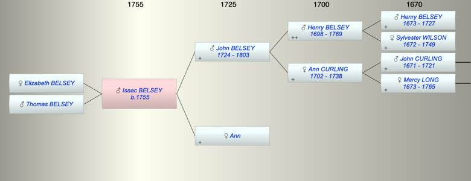

| [Index] |
| Isaac BELSEY (1755 - ) |
|  |
| b. 1755 at Coldred |
| Parents: |
| John BELSEY (1724 - 1803) |
| Ann |
| Siblings (5): |
| Elizabeth BELSEY (1757 - ) |
| John BELSEY (1762 - ) |
| Ann BELSEY (1765 - ) |
| Mercy BELSEY (1768 - ) |
| Henry BELSEY (1770 - ) |
| Children (2): |
| Elizabeth BELSEY |
| Thomas BELSEY |
| Events in Isaac BELSEY (1755 - )'s life | |||||
| Date | Age | Event | Place | Notes | Src |
| 1755 | Isaac BELSEY was born | Coldred | Note 1 | ||
| 1803 | 48 | Death of father John BELSEY (aged 79) | |||
| Note 1: bap Coldred 20 Jul 1755 son of John and Ann ex FMP PR |
| Created on a Mac™ using iFamily for Mac™ on 8 Oct 2023 |